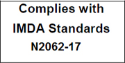
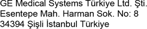

The following optional feature IS NOT available in the USA and its territories:
– Ophthalmic
• JAPAN
The GE product families are tested to meet all applicable requirements in relevant EU Directives and European/ International standards. Any changes to accessories, peripheral units or any other part of the system must be approved by the manufacturer: GE Medical Systems. Ignoring this advice may compromise the regulatory approvals obtained for the product. This product complies with the regulatory requirement of the following: |
Table i-1: Regulatory Requirements
Standard/Directive |
Scope |
93/42/EEC |
Medical Devices Directive (MDD) 2007/47/EC (MDD amendment) Directive 2011/65/EU RoHS 2002/96/EC WEEE |
EN55011 |
Industrial, scientific and medical equipment - Radio-frequency disturbance characteristics - Limits and methods of measurement |
IEC* 60601-1 CAN/CSA-C22.2 No 601.1 |
Medical Electrical Equipment, Part 1; General Requirements for Safety |
IEC* 60601-2-37 |
Medical electrical equipment - Part 2-37. Particular requirements for the safety of ultrasonic medical diagnostic and monitoring equipment |
IEC* 60601-1-2 |
Medical Electrical Equipment - part 1-2. Collateral standard: Electromagnetic compatibility - Requirements and tests. |
IEC* 60601-1-4 |
Medical Electrical Equipment - part 1-4. Collateral standard: Programmable electrical medical systems |
IEC* 60601-1-6 |
Medical Electrical Equipment - part 1-6. Collateral standard: Usability. |
Standard for real-time display of thermal and mechanical acoustic output indices on diagnostic ultrasound equipment. |
|
ISO10993-1 |
Biological evaluation of medical devices |
EN 300 328 |
Electromagnetic compatibility and Radio spectrum Matters (ERM); Wideband transmission systems |
ISO 14971 |
Medical devices — Application of risk management to medical devices |
IEC* 62304 |
Medical device software — Software life-cycle processes |
IEC* 62366 |
Medical devices — Application of usability engineering to medical devices |
IEC 60601-1-11 |
Requirements for medical electrical equipment and medical electrical systems used in the home healthcare environment |
IEC 60601-1-12 |
Requirements for medical electrical equipment and medical electrical systems intended for use in the emergency medical services environment |
EN13718 |
Medical vehicles and their equipment — Air ambulances, Part 1: Requirements for medical devices used in air ambulances |
EN1789 |
Medical vehicles and their equipment — Road ambulances |
EN980 |
Symbols for use in the labeling of medical devices |
ISO15223 |
Medical devices — Symbols to be used with medical device labels, labelling and information to be supplied — Part 1: General requirements |
EN1041 |
Information supplied by the manufacturer with medical devices |
IEC 62209-2 |
Human exposure to radio frequency fields from hand-held and body-mounted wireless communication devices — Human models, instrumentation, and procedures — Part 2: Procedure to determine the specific absorption rate (SAR) for wireless communication devices used in close proximity to the human body (frequency range of 30 MHz to 6 GHz) |
* including national deviations |
|
• GE Vingmed Ultrasound is ISO 13485 certified. |
The following classifications are in accordance with the IEC/ EN 60601-1. Type and degree of protection against electric shock: • Vscan Extend has an internal battery which allows the operation during AC power absence. • The AC adapter is Class II. • Vscan Extend has type BF Applied Part. Vscan Extend main unit is rated IP33: • 3: Protected against solid foreign objects of 2.5 mm Ø and greater. • 3: Protected against spraying water. To ensure the water resistance of the device, all covers, including the doors for USB and debug must be firmly closed. Vscan Extend probe (immersible portion) is IPX7. |
EQUIPMENT in which protection against electric shock does not rely on BASIC INSULATION only, but in which additional safety precautions such as DOUBLE INSULATION or REINFORCED INSULATION are provided, there being no provision for protective earthing or reliance upon installation conditions. |
TYPE BF APPLIED PART providing a specified degree of protection against electric shock, with particular regard to allowable LEAKAGE CURRENT. |
Table i-2: Leakage Current
|
Normal mode |
Single fault condition |
Patient leakage current |
<100 microA |
<500 microA |
• The original document was written in English. |
• USA AND TERRITORIES |
|
The following optional feature IS NOT available in the USA and its territories: – Ophthalmic • JAPAN |
|
The following optional feature IS NOT available in JAPAN: – Ophthalmic • CHINA |
|
The following optional feature IS NOT available in CHINA: – Ophthalmic • SINGAPORE Complies with IMDA Standards N2062-17  • FRANCE First CE marked on 14 June 2016 |
Turkey  |